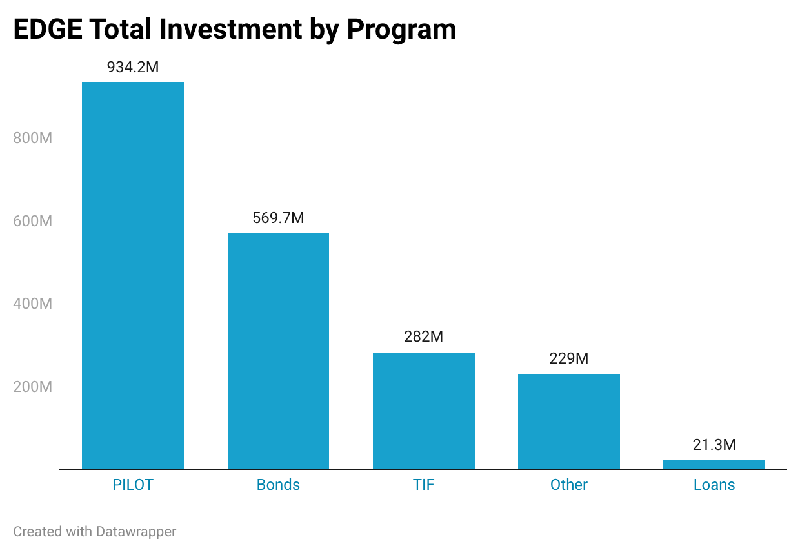
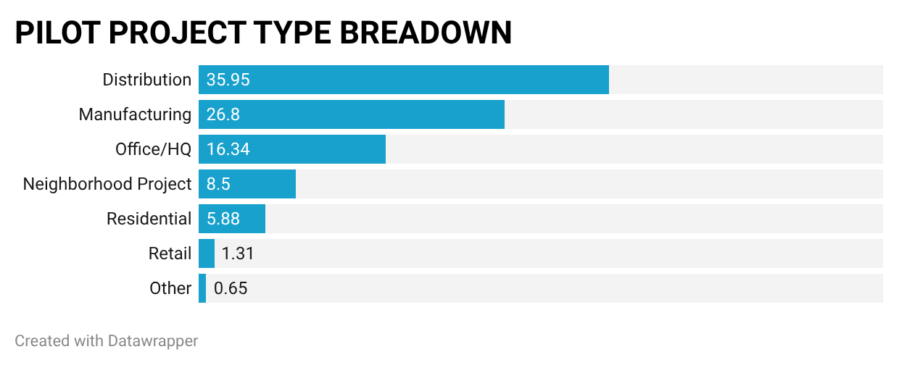
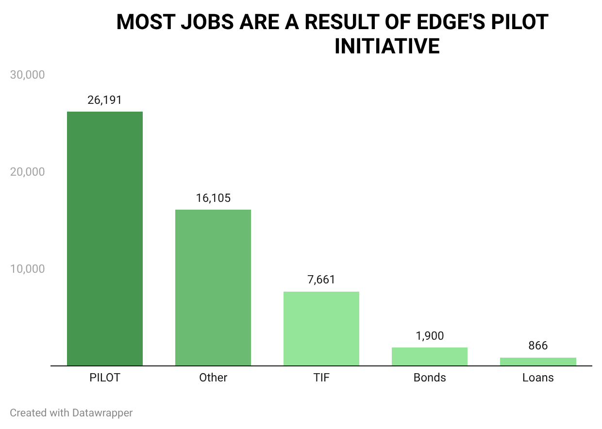
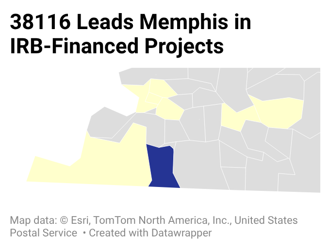

This section presents a curated set of visuals that support the findings from Part 2. Each chart highlights a key aspect of EDGE’s economic impact across Memphis.
Entity Relationship Diagram
Figure A. Final PostgreSQL schema for the EDGE datasets.
Investment Across Programs

Figure 1. Total investment by EDGE program.

Figure 2. Distribution and Manufacturing account for more than 60% of all PILOT approvals, reflecting Memphis’s logistics‑driven economic base.
NOTE: “None” and “Null” categories (4.57% combined) were excluded because they do not represent actual project types.'Other' represents several very small categories that individually account for a negligible share of projects.”
Total Jobs by EDGE Program

Figure 3. Total Jobs by EDGE program.'Other' includes Fast Track Grants, Economic Development Grants, Port of Memphis approvals, and FTZ‑77 (Foreign Trade Zone) designations. FTZ‑77 is a federal trade‑facilitation program administered locally by EDGE that allows companies to delay, reduce, or eliminate import duties.”Figure 4. Distribution, Office/HQ, and Manufacturing together represent 95.7% of all jobs supported by PILOT projects. This concentration reflects Memphis’s economic strengths in logistics, corporate operations, and manufacturing.
Geographic Distribution
Figure 5. Distribution of EDGE projects across Memphis ZIP codes.The darker shades on the map indicate neighborhood or zip codes where there is a higher concentration of overall EDGE-focused projects. 38118, the darkest blue area on the map, saw the highest concentration.

Figure 6. Industrial Revenue Bond projects concentrated in 38116. The blue shaded area on the map is zip code 38116.